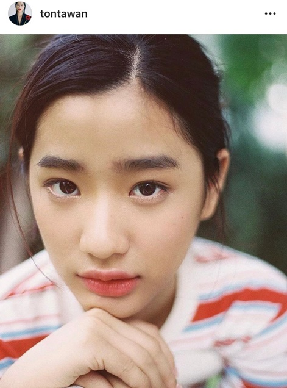

biography
ต้นตะวัน ตันติเวชกุล (เกิด 7 พฤศจิกายน พ.ศ. 2543) ชื่อเล่น ตู ที่มาของชื่อ เธอคือพ่อของเธอเป็นคนตั้งให้ ที่ชื่อตู เพราะพ่อ อยากให้หมายถึง ตัวเราเอง ส่วนชื่อจริงที่ชื่อต้น ตะวัน ความหมายของชื่อคือ ทิศตะวันออก ที่พ่อ ตั้งชื่อนี้ให้เพราะว่าจะได้คล้องกับชื่อของพี่ชาย ตน ต้นหนที่แปลว่าผู้กำหนดทิศทางของเรือ ต้นตะวันจึงแปลได้ว่าเป็นทิศตะวันออกให้พี่ชาย